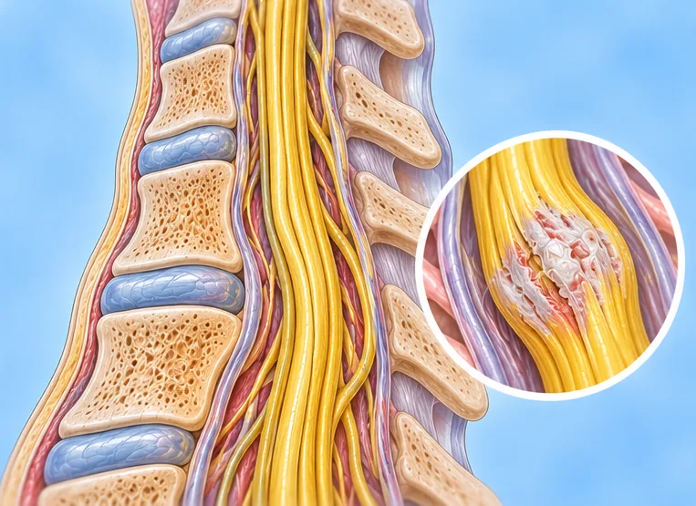

痉挛性斜颈
颈部肌肉不自主收紧，把头拉向或转向一侧
这是什么
颈部某些肌肉不受控制地收缩，使头部转向、倾斜或抖动，会不舒服，有时会疼。
- 颈部肌肉
- 多在成年后开始
- 头被拉向一侧
- 就诊科室
- 神经内科医生
- 多发人群
- 成年人，常在中年，女性稍多
- 传染性
- 不传染
- 病程
- 常常持续很久，也可能时好时坏；医生可说明各种选择
常见表现

颈部僵硬酸痛颈痛 
转头不灵活颈部活动受限 后脑勺头痛枕部头痛 肩膀疼痛肩痛
为什么会这样

病因尚未完全明确特发性 
家族遗传遗传易感性
其他原因
- 大脑中控制动作的部分出了问题
- 有时在颈部或头部受伤后出现，或与某些药物有关
出现这些情况请先看医生
- 跌倒或受伤后颈部突然歪斜，并有新的无力或麻木：去医院
- 吞咽或呼吸困难
- 发烧、颈部僵硬并剧烈头痛：立即去医院
- 手臂或腿无力或刺痛
- 疼痛太剧烈，无法睡觉或工作
如果有以上情况，请先看医生，再来做调理。
本页只是一般性的健康资讯。请继续按时服用平常的药物，并继续看医生。
请继续日常治疗
请继续按医嘱服药，并按时复诊。我们的调理是温和的辅助，不能代替医疗。
日常护理
患处温热敷温敷
更多自我照顾的方法
- 继续看神经科医生，询问缓解的方法
- 试试物理治疗师教的轻柔伸展
- 用合适的枕头支撑颈部，少看屏幕并常休息
- 留意什么会使它加重，如压力或疲劳
告诉理疗师
- 最近颈部受伤或手术
- 手臂发麻刺痛
- 服用抗凝药
- 心脏起搏器或金属植入物
- 转头时头晕
调理师会在开始前和你确认这一项。
相关疾病
参考资料: General information based on public health sources such as Mayo Clinic, NHS, Cleveland Clinic and NCBI StatPearls.
页面更新: 2026-10-31